このドキュメントでは .NET MAUI と Microsoft.Toolkit.Mvvm を利用した MVVM によるモバイルアプリ開発をハンズオンで学習します。
開発するのは Web API に接続し、データを表示するモバイルアプリです。
Visual Studio 2022 のダウンロードページからダウンロードします。
ダウンロードした VisualStudioSetup.exe を実行すると、Visual Studio Installer が起動します。
Visual Studio Installer を起動して「.NET マルチプラットフォーム アプリの UI 開発」をインストールします。
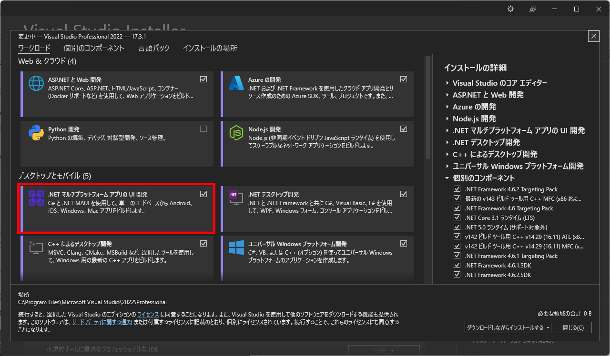Visual Studio を起動して「新しいプロジェクト」をクリックします。

ダイアログで検索窓に maui と入力し、「.NET MAUI アプリ」をクリックして .NET MAUI プロジェクトを作成します。

任意の名前とフォルダにプロジェクトを構成します。（本ドキュメントでは MobileApp という名前空間ですので合わせても良いでしょう。）

フレームワークは「.NET 6.0（長期的なサポート）」を選択してプロジェクトを作成します。
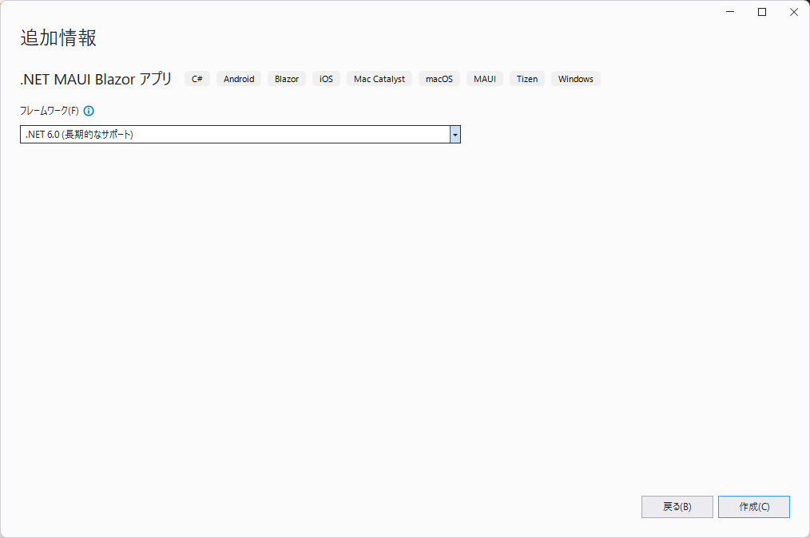Android エミュレーターをドロップダウンから選択してデバッグ実行ができます。
「Android Emulators」が表示されていない場合は、新規にエミュレーターを作成する必要があります。

ドロップダウンから「Android デバイスマネージャー」をクリックします。
表示されるダイアログで「新規」ボタンをクリックします。表示されない場合は、「ツール＞Android＞Android デバイスマネージャー」をクリックします。
「新規」ボタンをクリックします。

Pixel 5 などを選んでおくと良いでしょう。x86 か x86_64 を選択します。（Intel CPU の仮想化に Hyper-V または Intel HAXM が必要です。）各種選択した状態で「新しいデバイスイメージがダウンロードされます。」という注意書きがある場合は、Android SDK のダウンロードサイトから条件に見合った OS イメージを自動でダウンロードしてエミュレーターを作成します。
準備が整ったところで最初のデバッグ実行をしてみましょう。
Android エミュレーターが起動して、次のような画面が表示されれば OK です。

+ MobileApp
- Platforms フォルダ
- Android, iOS, MacCatalyst, Tizen, Windows フォルダ
- Resources フォルダ
- App.xaml / App.xaml.cs
- AppShell.xaml.cs / AppShell.xaml
- AssemblyInfo.cs
- MauiProgram.cs
- MainPage.xaml / MainPage.xaml.cs
Platforms フォルダ各ターゲット プラットフォームのフォルダーには、各プラットフォームでアプリを起動するプラットフォーム固有のコードと、追加するプラットフォーム コードが含まれています。
各子フォルダーは、.NET MAUI がターゲットにできるプラットフォームを表します。
MauiProgram.csアプリケーションのエントリーポイントです。
プラットフォーム（Android, iOS, Mac, Win）ごとにアプリエントリポイント（MainApplication クラス）があり、そこから CreateMauiApp メソッドが呼び出されます。
public static class MauiProgram
{
public static MauiApp CreateMauiApp()
{
var builder = MauiApp.CreateBuilder();
builder
.UseMauiApp<App>()
.ConfigureFonts(fonts =>
{
fonts.AddFont("OpenSans-Regular.ttf", "OpenSansRegular");
fonts.AddFont("OpenSans-Semibold.ttf", "OpenSansSemibold");
});
return builder.Build();
}
}
App.xaml.csApp クラスは Application クラスから派生しています。
App メソッド内で、初期ページのプロパティ MainPage に AppShell クラスのインスタンスを指定しています。
public class App : Application
{
public App()
{
InitializeComponent();
MainPage = new AppShell();
}
}
.NET MAUI Shell アプリでは、アプリのビジュアル階層は、クラスをサブクラス化する Shell クラスで記述されます。
このクラスは、次の 3 つの主要な階層オブジェクトのいずれかで構成されます。
AppShell.xamlMobileApp では ShellContent で構成されていることが確認できます。
<?xml version="1.0" encoding="UTF-8" ?>
<Shell
x:Class="MobileApp.AppShell"
xmlns="http://schemas.microsoft.com/dotnet/2021/maui"
xmlns:x="http://schemas.microsoft.com/winfx/2009/xaml"
xmlns:local="clr-namespace:MobileApp"
Shell.FlyoutBehavior="Disabled">
<ShellContent
Title="Home"
ContentTemplate="{DataTemplate local:MainPage}"
Route="MainPage" />
</Shell>
AppShell.xaml.csAppShell のパーシャルクラスで、コードビハインドと呼ばれます。
MainPage.xamlView のクラスです。XML ベースのクラスを表す言語 XAML で記述します。要素（Element）がインスタンスを表し、属性（Attribute）がプロパティなどを表します。
<?xml version="1.0" encoding="utf-8" ?>
<ContentPage xmlns="http://schemas.microsoft.com/dotnet/2021/maui"
xmlns:x="http://schemas.microsoft.com/winfx/2009/xaml"
x:Class="MobileApp.MainPage">
<ScrollView>
<VerticalStackLayout
Spacing="25"
Padding="30,0"
VerticalOptions="Center">
<Image
Source="dotnet_bot.png"
SemanticProperties.Description="Cute dot net bot waving hi to you!"
HeightRequest="200"
HorizontalOptions="Center" />
<Label
Text="Hello, World!"
SemanticProperties.HeadingLevel="Level1"
FontSize="32"
HorizontalOptions="Center" />
<Label
Text="Welcome to .NET Multi-platform App UI"
SemanticProperties.HeadingLevel="Level2"
SemanticProperties.Description="Welcome to dot net Multi platform App U I"
FontSize="18"
HorizontalOptions="Center" />
<Button
x:Name="CounterBtn"
Text="Click me"
SemanticProperties.Hint="Counts the number of times you click"
Clicked="OnCounterClicked"
HorizontalOptions="Center" />
</VerticalStackLayout>
</ScrollView>
</ContentPage>
MainPage.xaml.csMainPage のパーシャルクラスで、コードビハインドと呼ばれます。
OnCounterClicked は CounterBtn の Clicked にバインディングされています。
ボタンをクリックすると数字が１つずつ増えていきます。
public partial class MainPage : ContentPage
{
int count = 0;
public MainPage()
{
InitializeComponent();
}
private void OnCounterClicked(object sender, EventArgs e)
{
count++;
if (count == 1)
CounterBtn.Text = $"Clicked {count} time";
else
CounterBtn.Text = $"Clicked {count} times";
SemanticScreenReader.Announce(CounterBtn.Text);
}
}
起動確認は以上です。
起動を確認したら、Web API への接続を追加していきます。
まずは Model クラスを作成します。
プロジェクトを右クリックして「追加＞クラス」から Weather クラスを作成します。次のようになります。
namespace MobileApp
{
public class Weather
{
public DateTime Date { get; set; }
public int Temperature { get; set; }
public string Summary { get; set; }
}
}
C# 10.0 から {} なしの以下のような書き方で名前空間を指定できるようになりました。
namespace MobileApp;
public class Weather
{
public DateTime Date { get; set; }
public int Temperature { get; set; }
public string Summary { get; set; }
}
次に View を作成していきましょう。MainPage.xaml を開きます。
ScrollView 内をすべて削除し、次の XAML で置き換えます。次のようになります。
<StackLayout Padding="10">
<Label Text="Welcome to .NET MAUI!" />
<StackLayout Orientation="Horizontal">
<Label VerticalTextAlignment="Center" Text="Can Click" />
<Switch x:Name="canClickSwitch"
IsToggled="True"
Toggled="SwitchOnToggled" />
</StackLayout>
<Button x:Name="button"
Clicked="GetWeathersButtonOnClicked"
Text="Get Weathers" />
<RefreshView x:Name="refreshView" Refreshing="PullToRefreshing">
<CollectionView x:Name="collectionView"
ItemsSource="{Binding}"
SelectionChanged="OnCollectionViewSelectionChanged"
SelectionMode="Single">
<CollectionView.ItemTemplate>
<DataTemplate>
<StackLayout Orientation="Horizontal">
<Label Text="{Binding Date, StringFormat='{}{0:yyyy/MM/dd}'}" />
<Label Text="{Binding Temperature, StringFormat='{0}℃'}" />
<Label Text="{Binding Summary}" />
</StackLayout>
</DataTemplate>
</CollectionView.ItemTemplate>
</CollectionView>
</RefreshView>
</StackLayout>
後ほど、同じような View を順を追って少しずつ作成しますので、ここでの詳しい説明は割愛します。
MainPage.xaml.cs を開きます。
クラス変数として以下を追加します。
public ObservableCollection<Weather> Weathers = new();
bool _firstAppearing = true;
次にコンストラクターの下にいくつかのメソッドを追加します。
protected override void OnAppearing()
{
base.OnAppearing();
if (_firstAppearing)
GetWeathersAsync();
_firstAppearing = false;
}
private void GetWeathersButtonOnClicked(object sender, EventArgs e)
{
GetWeathersAsync();
}
private void PullToRefreshing(object sender, EventArgs e)
{
button.IsEnabled = false;
GetWeathersAsync();
refreshView.IsRefreshing = false;
button.IsEnabled = true;
}
private void SwitchOnToggled(object sender, ToggledEventArgs e)
{
button.IsEnabled = e.Value;
refreshView.IsEnabled = e.Value;
}
private async void OnCollectionViewSelectionChanged(object sender, SelectionChangedEventArgs e)
{
if (e.CurrentSelection.Count == 0)
return;
var current = e.CurrentSelection.FirstOrDefault() as Weather;
collectionView.SelectedItem = null;
var message = $"{current?.Date:yyyy/MM/dd} は {current?.Temperature}℃ で {current?.Summary} です。";
await Shell.Current.DisplayAlert("weather", message, "OK");
}
void GetWeathersAsync()
{
Weathers.Clear();
Weathers = new ObservableCollection<Weather>
{
new Weather
{
Date = new DateTime(2020,11,1),
Summary = "Rainy",
Temperature = 20
},
new Weather
{
Date = new DateTime(2020,11,2),
Summary = "Cloudy",
Temperature = 25
},
new Weather
{
Date = new DateTime(2020,11,3),
Summary = "Sunny",
Temperature = 30
}
};
BindingContext = Weathers;
}
いくつかのポイントを説明します。
OnAppearing はページ表示時のイベントです。OnCollectionViewSelectionChanged は CollectionView の SelectionChanged イベントのイベントハンドラーです。
SelectionChangedEventArgs の引数で現在の選択項目などを取得できます。SwitchOnToggled は Switch の Toggled イベントのイベントハンドラーです。GetWeathersButtonOnClicked は Button の Clicked イベントのイベントハンドラーです。PullToRefreshing は RefreshView の Refreshing イベントのイベントハンドラーです。GetWeathersAsync メソッドはダミーデータを作成し、CollectionView の BindingContext に ObservableCollection を指定しています。ここでデバッグ実行してみましょう。次のような画面が表示されれば OK です。
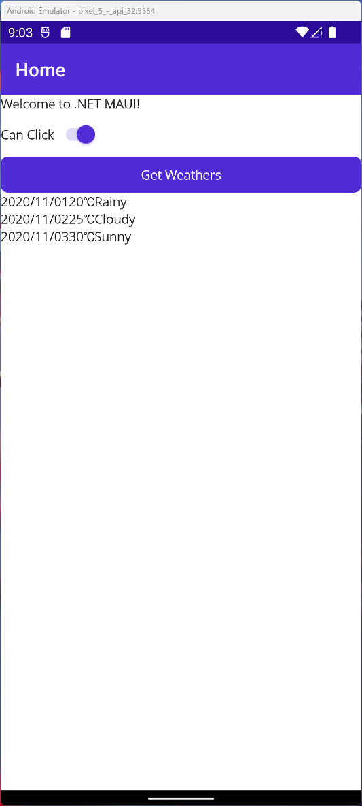GetWeathersAsync メソッドを実際の Web API https://weatherforecastsampleforprism.azurewebsites.net/weatherforecast からデータを取得する以下のコードで置き換えます。
using System.Diagnostics;
using System.Net.Http.Json;
static HttpClient _httpClient = new HttpClient();
async Task GetWeathersAsync()
{
Weathers.Clear();
try
{
// サイトからデータを取得
var response = await _httpClient.GetAsync("https://weatherforecastsampleforprism.azurewebsites.net/weatherforecast");
// レスポンスコード（200 など）を確認
response.EnsureSuccessStatusCode();
// レスポンスからコンテンツ（JSON）を取得
Weathers = await response.Content.ReadFromJsonAsync<ObservableCollection<Weather>>();
}
catch (Exception ex)
{
Debug.WriteLine(ex.Message);
}
BindingContext = Weathers;
}
Web からのデータ取得やファイル IO など時間の掛かる処理を行うため、非同期処理のメソッドを利用します。メソッドに async を付け、呼び出す際に await を付けます。Visual Studio で赤波線が表示される箇所を修正してください。
再度デバッグ実行して、次のような画面が表示されれば OK です。
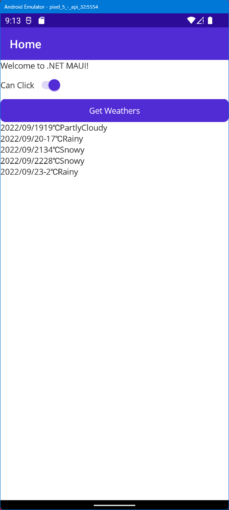標準の .NET MAUI の内容は以上です。
今回のハンズオンでは手順簡略化のため、あらかじめCommunityToolkit.MvvmのNuGetパッケージを適用しフォルダ構成やソースファイルをある程度準備した「Start_MVVM」プロジェクトを用意してありますので、そこからスタートして実装していきます。 この章ではさらに知見を深めたい方向けに、最初のMAUIプロジェクト作成からCommunityToolkit.Mvvmを適用し、「Start_MVVM」プロジェクトの状態にするまでを記します。
Visual Studio を起動して「新しいプロジェクト」をクリックします。
ダイアログで検索窓に maui と入力し、「.NET MAUI アプリ」をクリックして .NET MAUI プロジェクトを作成します。
任意の名前とフォルダにプロジェクトを構成します。（本ドキュメントではMobileApp2という名前で作成します。）

フレームワークは「.NET 6.0（長期的なサポート）」を選択してプロジェクトを作成します。
MobileApp.Android を右クリックして「スタートアッププロジェクトに設定」をクリックするか、「スタートアッププロジェクト」のドロップダウンから MobileApp.Android を選択します。
すると、接続している Android デバイスや利用できる Android エミュレーターをドロップダウンから選択してデバッグ実行ができます。
「Android Emulator」としか表示されていない場合は、新規にエミュレーターを作成する必要があります。

ドロップダウンから「Android デバイスマネージャー」をクリックします。
表示されるダイアログで「新規」ボタンをクリックします。表示されない場合は、「ツール＞Android＞Android デバイスマネージャー」をクリックします。
「新規」ボタンをクリックします。
Pixel 5 などを選んでおくと良いでしょう。x86 か x86_64 を選択します。（Intel CPU の仮想化に Hyper-V または Intel HAXM が必要です。）各種選択した状態で「新しいデバイスイメージがダウンロードされます。」という注意書きがある場合は、Android SDK のダウンロードサイトから条件に見合った OS イメージを自動でダウンロードしてエミュレーターを作成します。
準備が整ったところで最初のデバッグ実行をしてみましょう。
Android エミュレーターが起動して、次のような画面が表示されれば OK です。
プロジェクトが作成されたら、ソリューションエクスプローラーのプロジェクト名を右クリックし、「NuGetパッケージの管理」をクリックします。
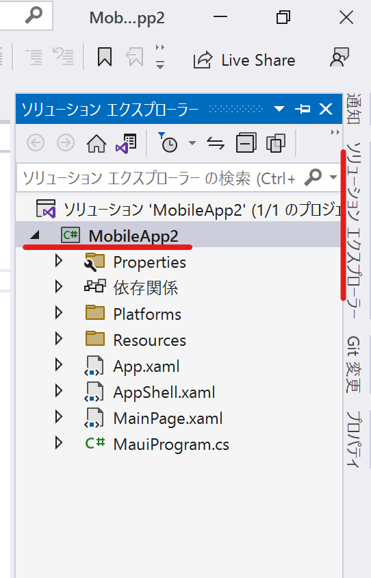 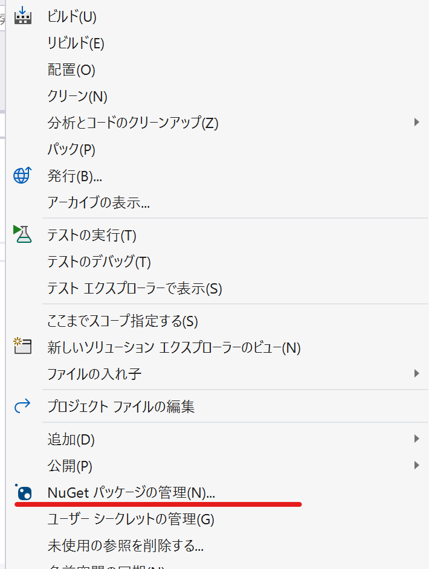NuGetパッケージマネージャーの「参照」をクリックし、検索ボックスに「CommunityToolkit.Mvvm」と入力します。検索結果のCommunityToolkit.Mvvmをクリック選択し「インストール」をクリックします。
※似た名前のパッケージがあるので間違えないように注意してください。
ライセンス規約同意などのダイアログが表示されるので、同意して進めていきます。

デフォルトプロジェクトの構成の章でも説明した通り、デフォルトでは下記の状態となっています。(各ファイルの内容も同様のため説明は省略します)

MobileApp プロジェクトを右クリックして「追加＞新しいフォルダー」から Models、ViewModels、Viewsの3つのフォルダを作成します。

この時点ではまだ3つのフォルダは空の状態です。
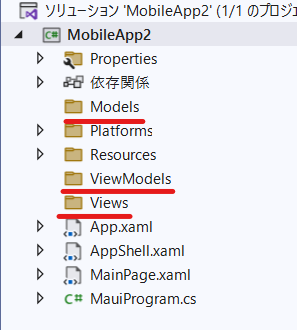MainPage.xamlファイルを、Viewsフォルダにドラッグします。
実際にはViewsフォルダに移動しなくても、後述のViewとViewModelの紐づけを正しく行えば動作はしますが、プロジェクトの構成を見通しやすくするために移動してまとめておいたほうが良いでしょう。


namespaceも適宜フォルダ構成に合わせて変更しておくとよりわかりやすいでしょう。変更点は下記3か所です。(赤線部分を追加)

先ほど作成したViewModelsフォルダを右クリックし、「追加＞クラス」からViewModelBase.csクラスを追加し、中身を下記のように記述します。
using CommunityToolkit.Mvvm.ComponentModel;
namespace MobileApp2.ViewModels;
[ObservableObject]
public partial class ViewModelBase
{
[ObservableProperty]
private string _title;
}
同じようにViewModelsフォルダを右クリックし、「追加＞クラス」からMainPageViewModel.csクラスを追加し、中身を下記のように記述します。
namespace MobileApp2.ViewModels;
public partial class MainPageViewModel : ViewModelBase
{
public MainPageViewModel()
{
Title = "Main Page";
}
}
同じようにViewModelsフォルダを右クリックし、「追加＞クラス」からDetailsViewModel.csクラスを追加し、中身を下記のように記述します。
namespace MobileApp2.ViewModels;
public partial class DetailsViewModel : ViewModelBase
{
}
MainPage.xamlとMainPage.xaml.csファイルを下記のように修正します。
<?xml version="1.0" encoding="utf-8" ?>
<ContentPage xmlns="http://schemas.microsoft.com/dotnet/2021/maui"
xmlns:x="http://schemas.microsoft.com/winfx/2009/xaml"
x:Class="MobileApp2.Views.MainPage"
xmlns:viewModel="clr-namespace:MobileApp2.ViewModels"
xmlns:model="clr-namespace:MobileApp2.Models"
x:DataType="viewModel:MainPageViewModel"
Title="{Binding Title}">
<StackLayout Padding="10">
<Label Text="Welcome to .NET MAUI and CommunityToolkit MVVM!" />
</StackLayout>
</ContentPage>
using MobileApp2.ViewModels;
namespace MobileApp2.Views;
public partial class MainPage : ContentPage
{
public MainPage(MainPageViewModel vm)
{
InitializeComponent();
BindingContext = vm;
}
}
プロジェクトを右クリックし「追加＞新しい項目」をクリックします。
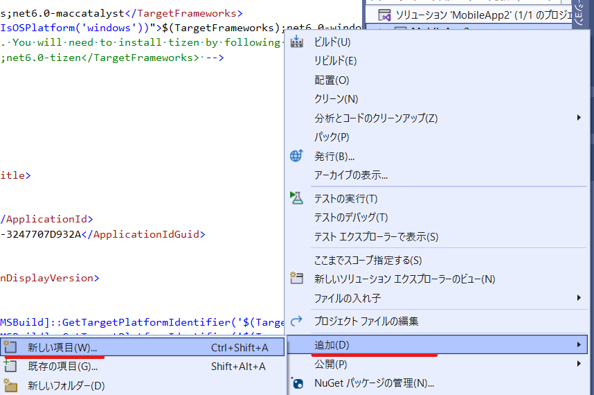「.NET MAUI ＞ .NET MAUI ContentPage(XAML)」を選択し、名前をDetailPage.csと入力します。xamlファイルとcsファイルがセットで追加されます。
xamlファイルとcsファイルをそれぞれ以下のように書き換えます。
<?xml version="1.0" encoding="utf-8" ?>
<ContentPage xmlns="http://schemas.microsoft.com/dotnet/2021/maui"
xmlns:x="http://schemas.microsoft.com/winfx/2009/xaml"
xmlns:viewModel="clr-namespace:MobileApp2.ViewModels"
x:Class="MobileApp2.Views.DetailsPage"
x:DataType="viewModel:DetailsViewModel">
<ScrollView VerticalOptions="Center">
</ScrollView>
</ContentPage>
using MobileApp2.ViewModels;
namespace MobileApp2.Views;
public partial class DetailsPage : ContentPage
{
public DetailsPage(DetailsViewModel vm)
{
InitializeComponent();
BindingContext = vm;
}
}
下記のように記述しDIコンテナーに登録します。
これでViewのコンストラクタの引数としてViewModelを受け取ることができ、紐付けがなされます。
using MobileApp2.ViewModels;
using MobileApp2.Views;
namespace MobileApp2;
public static class MauiProgram
{
public static MauiApp CreateMauiApp()
{
var builder = MauiApp.CreateBuilder();
builder
.UseMauiApp<App>()
.ConfigureFonts(fonts =>
{
fonts.AddFont("OpenSans-Regular.ttf", "OpenSansRegular");
fonts.AddFont("OpenSans-Semibold.ttf", "OpenSansSemibold");
});
builder.Services.AddSingleton<MainPage>();
builder.Services.AddSingleton<MainPageViewModel>();
builder.Services.AddTransient<DetailsPage>();
builder.Services.AddTransient<DetailsViewModel>();
return builder.Build();
}
}
ここまで記述できていれば、「Start_MVVM」プロジェクトと同じ状態になっているはずです。念のため問題なくアプリを起動できるか再度確認します。デバッグ実行のボタンを押し、下記の画面が表示されることを確認してください。
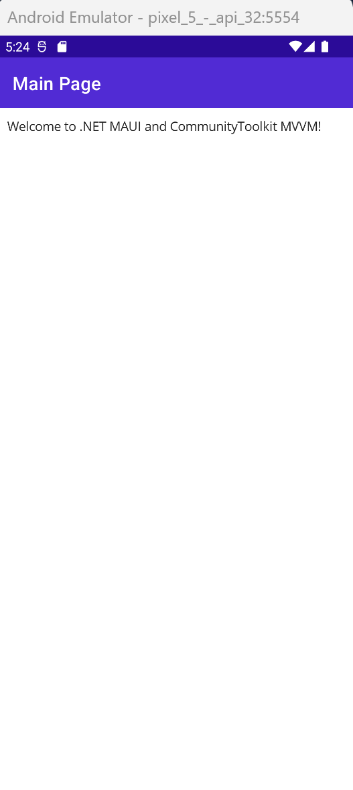.NET MAUI アプリへのCommunityToolkit.Mvvmの適用と動作確認は以上です。
アプリのプログラムを、Model - View - ViewModelという3つの役割に分けて実装するアーキテクチャです。こちらのドキュメントに詳しく解説されています。
Model - View - ViewModelにプログラムを分けた場合、それぞれのプログラム間でデータのやりとりをする必要があります。例えばModelクラスでHTTPでデータを取得した場合、それをView側に反映させるには変更通知と呼ばれる仕組みを実装する必要があります。
CommunityToolkit.Mvvmを使用したViewとViewModelのデータバインディングを、MainPage.xamlとViewModelBase.csを例に見ていきましょう。
<?xml version="1.0" encoding="utf-8" ?>
<ContentPage xmlns="http://schemas.microsoft.com/dotnet/2021/maui"
xmlns:x="http://schemas.microsoft.com/winfx/2009/xaml"
x:Class="MobileApp.Views.MainPage"
xmlns:viewModel="clr-namespace:MobileApp.ViewModels"
xmlns:model="clr-namespace:MobileApp.Models"
x:DataType="viewModel:MainPageViewModel"
Title="{Binding Title}">
using CommunityToolkit.Mvvm.ComponentModel;
namespace MobileApp.ViewModels;
[ObservableObject]
public partial class ViewModelBase
{
[ObservableProperty]
private string _title;
}
一見どこがどうバインディングされているかわからないかと思いますが、xaml側のTitle="{Binding Title}"とViewModel側のprivate string _title;はバインディングされています。
[ObservableProperty]というAttributeはCommunityToolkit.Mvvmをインストールすることで使用できるもので、裏側で面倒なバインディングのための記述を生成してくれます。
本来CommunityToolkit.Mvvmを導入しない場合は下記のようにViewModelを記述しないといけません。プロパティやViewModelのクラスを追加するたびに都度このような記述をしなければなりませんが、CommunityToolkit.Mvvmの機能によりAttributeを付けるだけ裏側でコード生成してくれるので、プログラマーの負担が減ります。
using System.ComponentModel;
using System.Runtime.CompilerServices;
namespace MobileApp2.ViewModels;
public class ViewModelBase : INotifyPropertyChanged
{
string _title;
public string Title
{
get => _title;
set
{
if (_title == value)
return;
_title = value;
OnPropertyChanged();
}
}
public event PropertyChangedEventHandler PropertyChanged;
public void OnPropertyChanged([CallerMemberName]string name = null)
{
PropertyChanged?.Invoke(this, new PropertyChangedEventArgs(name));
}
}
先ほどの章では、Viewのコードビハインドにイベントハンドラーを実装しました。
しかし、MVVMパターンではViewModelのメソッドをViewからコールする必要があります。そこで、C#ではICommandというinterfaceが用意されています。ただのイベントハンドラーに比べ、抽象化されUIのイベントの実行をしやいものになっています。
public interface ICommand
{
event EventHandler? CanExecuteChanged;
bool CanExecute(object? parameter);
void Execute(object? parameter);
}
CommunityToolkit.Mvvmでは、RelayCommandというICommandの実装が提供されており、このハンズオンでもこれを使用します。Attributeを付加するだけでメソッドをコマンドとしてViewから実行することができます。
[RelayCommand(CanExecute = nameof(CanClick))]
private async Task GetWeathersAsync()
{
・
・
・
}
Viewから使うときは下記のようにします。メソッド名(Async省略) + "Command"で指定します。これもCommunityToolkitが裏側でGetWeathersCommandというコマンドを生成しGetWeathersAsyncメソッドを紐付けてくれています。
<Button Command="{Binding GetWeathersCommand}" Text="Get Weathers" />
CommunityToolkit.Mvvmを使用したMVVMとデータバインディングの解説は以上になります。
ここからは「Start_MVVM」プロジェクトを使って、.NET MAUI + CommunityToolkit.Mvvmの構成で実装をします。 まずはVisual Studioで「Start_MVVM」プロジェクトを開き、Web API への接続を追加しましょう。
今回は Visual Studio の ASP.NET Core Web アプリケーションの API で作成されるテンプレートアプリをそのまま https://weatherforecastsampleforprism.azurewebsites.net/weatherforecast にアップロードしてあります。（時間があれば同じものをローカルホストで動かします。）URL にアクセスして表示される JSON を見てみましょう。
[
{
"date": "2022-09-20T09:20:29.1731766+00:00",
"temperature": -16,
"summary": "Snowy"
},
{
"date": "2022-09-21T09:20:29.1733714+00:00",
"temperature": -3,
"summary": "Snowy"
},
{
"date": "2022-09-22T09:20:29.1733728+00:00",
"temperature": 35,
"summary": "Cloudy"
},
{
"date": "2022-09-23T09:20:29.1733826+00:00",
"temperature": 29,
"summary": "PartlyCloudy"
},
{
"date": "2022-09-24T09:20:29.1733829+00:00",
"temperature": -17,
"summary": "Snowy"
}
]
まずはこの JSON をオブジェクトとして操作するための Model クラスを作成します。
事前に Web API から表示されている JSON をクリップボードにコピーしておきます。
MobileApp プロジェクトを右クリックして「新しいフォルダー」から Models フォルダを作成します。
Models フォルダを右クリックして「追加＞クラス」から Weather クラスを作成します。
作成された Weather クラス全体を選択して、「編集＞形式を選択して貼り付け＞JSONをクラスとして貼り付ける」をクリックします。

以下のコードが得られます。
public class Rootobject
{
public Class1[] Property1 { get; set; }
}
public class Class1
{
public DateTime date { get; set; }
public int temperature { get; set; }
public string summary { get; set; }
}
Rootobject クラスは削除、Class1 を Weather に修正、各プロパティの先頭を大文字にします。
public class Weather
{
public DateTime Date { get; set; }
public int Temperature { get; set; }
public string Summary { get; set; }
}
次に Web API からデータを取得するインターフェイスと実装を作成します。
Services フォルダを作成します。
Services フォルダを右クリックして「追加＞新しい項目」から「インターフェイス」を選択し、IWeaterService を作成します。

IWeatherService.cs で、インターフェイスを public 属性にして、Weather のコレクションを戻り値に持つ GetWeathersAsync メソッドを追加します。次のようになります。
public interface IWeatherService
{
Task<List<Weather>> GetWeathersAsync();
}
インターフェイスはこれで完了です。続いてインターフェイスの実装を作成します。
Services フォルダを右クリックして「追加＞クラス」から WeatherService クラスを作成します。
WeatherService.cs クラスに IWeatherService の継承を追加し、内容を次のように書き換えます。
class WeatherService : IWeatherService
{
static readonly HttpClient _httpClient = new();
public async Task<List<Weather>> GetWeathersAsync()
{
try
{
// サイトからデータを取得
var response = await _httpClient.GetAsync("https://weatherforecastsampleforprism.azurewebsites.net/weatherforecast");
// レスポンスコード（200 など）を確認
response.EnsureSuccessStatusCode();
// レスポンスからコンテンツ（JSON）を取得
return await response.Content.ReadFromJsonAsync<List<Weather>>();
}
catch (Exception ex)
{
Debug.WriteLine(ex.Message);
return null;
}
}
}
不足する using は IntelliSnese で追加できます。
Debug の上で Ctrl + .(ピリオド)を押す（または「考えられる修正内容を表示する」をクリックする）とクイックアクションという機能で候補が表示されます。
ここでは using System.Diagnostics; を選択します。
WeatherService はこれで完了です。
インターフェイスと実装クラスを追加したので、MauiAppBuilder に教える必要があります。
MauiProgram.cs を開き、CreateMauiApp メソッド内に次のコードを追加します。
builder.Services.AddSingleton<IWeatherService, WeatherService>();
コンテナーへの登録はこれで完了です。
続いて ViewModel の実装を行います。MainPageViewModel.cs を開きます。
コンストラクターの引数に IWeatherService を追加し、フィールドを追加します。次のようになります。
private readonly IWeatherService _weatherService;
public MainPageViewModel(IWeatherService weatherService)
{
Title = "Main Page";
_weatherService = weatherService;
}
次に View から参照するプロパティをコンストラクターの上に 2つ追加します。
public ObservableCollection<Weather> Weathers { get; private set; } = new();
[ObservableProperty]
[NotifyCanExecuteChangedFor(nameof(GetWeathersCommand))]
private bool _canClick = true;
メソッド：
[RelayCommand(CanExecute = nameof(CanClick))]
private async Task GetWeathersAsync()
{
CanClick = false;
Weathers.Clear();
// サービスの GetWeathersAsync メソッドをコールし、一時的に保存
var tempWeathers = await _weatherService.GetWeathersAsync();
// View から参照できるようにプロパティに流し込み
if (tempWeathers != null)
{
foreach (var weather in tempWeathers)
{
Weathers.Add(weather);
}
}
CanClick = true;
}
TBD RelayCommand の説明に書き換え
DelegateCommand の引数は Action executeMethod, Func<bool> canExecuteMethod のため、GetWeathersAsync 呼び出し、CanClick 参照を行っています。最後の ObservesCanExecute(Expression<Func<bool>> canExecuteExpression) は Prism 独自の機能で、影響を受けるプロパティを指定できるため、プロパティをプレーンに保つことができます。
ObservesCanExecure を使用しない場合は、プロパティのセッターにどのコマンドに実行可能の変更を伝えるか？を記述します。次のようになります。
private bool canClick;
public bool CanClick
{
get { return canClick; }
set
{
SetProperty(ref canClick, value);
GetWeathersCommand.RaiseCanExecuteChanged();
}
}
TBD ここまで
ViewModel は全体では次のようになっています。
public partial class MainPageViewModel : ViewModelBase
{
private readonly IWeatherService _weatherService;
public ObservableCollection<Weather> Weathers { get; private set; } = new();
[ObservableProperty]
[NotifyCanExecuteChangedFor(nameof(GetWeathersCommand))]
private bool _canClick = true;
[ObservableProperty]
private bool _isRefreshing;
[ObservableProperty]
private Weather _selectedWeather;
public MainPageViewModel(IWeatherService weatherService)
{
Title = "Main Page";
_weatherService = weatherService;
}
[RelayCommand(CanExecute = nameof(CanClick))]
private async Task GetWeathersAsync()
{
CanClick = false;
Weathers.Clear();
// サービスの GetWeathersAsync メソッドをコールし、一時的に保存
var tempWeathers = await _weatherService.GetWeathersAsync();
// View から参照できるようにプロパティに流し込み
if (tempWeathers != null)
{
foreach (var weather in tempWeathers)
{
Weathers.Add(weather);
}
}
CanClick = true;
IsRefreshing = false;
}
[RelayCommand]
private async void SelectWeather()
{
if (SelectedWeather == null)
return;
// 詳細画面に遷移するパターン
await Shell.Current.GoToAsync(nameof(DetailsPage), true, new Dictionary<string, object>
{
{"Weather", SelectedWeather}
});
}
}
これで ViewModel は完成です。
最後に View を作成していきましょう。MainPage.xaml を開きます。
StackLayout の HorizontalOptions／VerticalOptions を削除し、Padding=10 に置き換えます。Label の下に Switch と ViewModel で用意したコマンドを呼び出す Button を追加します。次のようになります。
<StackLayout Padding="10">
<Label Text="Welcome to Xamarin Forms and Prism!" />
<StackLayout Orientation="Horizontal">
<Label Text="Can Click" VerticalTextAlignment="Center" />
<Switch IsToggled="{Binding CanClick}" />
</StackLayout>
<Button Command="{Binding GetWeathersCommand}" Text="Get Weathers" />
</StackLayout>
エディタ下部の「<<」ボタンをクリックすると XAML プレビューアーが表示されますが、「XAML ホットリロード」の機能を使用した方が早いかもしれません。
TBD XAML ホットリロードの説明を追加する
この時点でデバッグ実行してみましょう。View を表示した際とボタンをクリックした際にスイッチとボタンが連動して動作するのが分かるはずです。
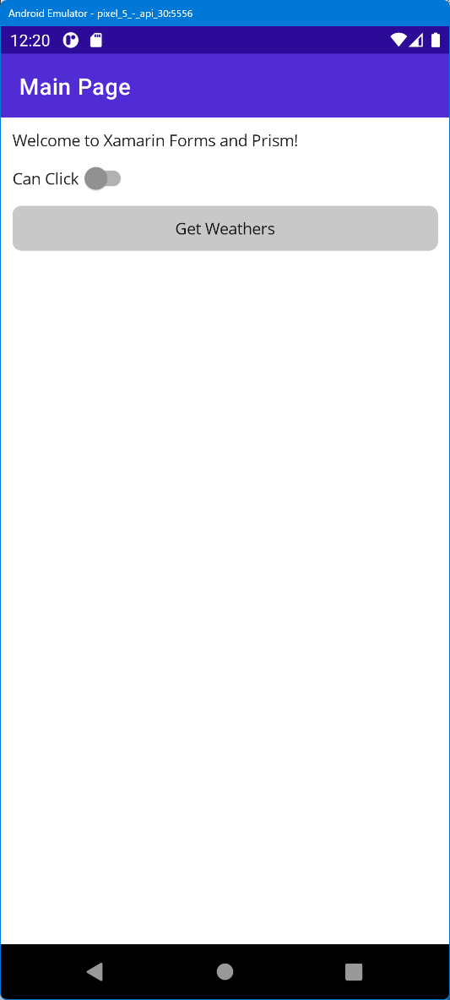MainPageViewModel や WeatherService にブレークポイントを貼ると処理の内容を確認できます。
TIPS:
以下のエラーが出た場合はMauiProgramクラスでWeatherServiceクラスをインジェクションしていないことが原因です。 コンテナーへの登録 を参照
System.InvalidOperationException: 'Unable to resolve service for type 'MobileApp.Services.IWeatherService' while attempting to activate 'MobileApp.ViewModels.MainPageViewModel'.'
ブレークポイントで Web API からデータが取得できていることが確認できたら、取得したデータを表示する CollectionView を追加します。
StackLayout 内の一番下（Button の下）に次を追加します。
<CollectionView ItemsLayout="VerticalList" ItemsSource="{Binding Weathers}">
<CollectionView.ItemTemplate>
<DataTemplate x:DataType="model:Weather">
</DataTemplate>
</CollectionView.ItemTemplate>
</CollectionView>
CollectionView の詳細は Xamarin.Forms CollectionView - Xamarin | Microsoft Docs を参照してください。
特に ItemsLayout プロパティで以下の表示方法を利用できます。今回は縦方向のリストを使用します。
Layout の詳細は .NET MAUI CollectionView 概要 を参照してください。
CollectionView の DataTemplate 内には自由にレイアウトを作成できます。次の XAML を追加してください。
<StackLayout Padding="10" Orientation="Horizontal">
<Label Grid.Row="0"
HorizontalTextAlignment="Center"
Text="{Binding Date, StringFormat='{}{0:yyyy/MM/dd}'}" />
<Label Grid.Row="1"
HorizontalTextAlignment="Center"
Text="{Binding Temperature, StringFormat='{0}℃'}" />
<Label Grid.Row="2"
HorizontalTextAlignment="Center"
Text="{Binding Summary}" />
</StackLayout>
次のような画面が表示されれば OK です。
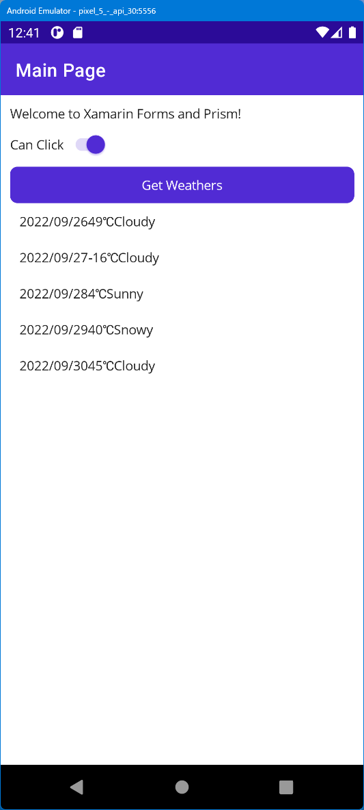日付や温度の表示方法を変更するために、StringFormat を使用しています。StringFormat の詳細は .NET MAUI 文字列の書式設定 を参照してください。
文字だけだと寂しいので、天気をアイコンで表示してみましょう。画像を表示するには Image クラスを利用します。
Image クラスの重要なプロパティに Image | データの表示 | Views | コントロール | ユーザーインターフェイス | .NET MAUI があります。
ImageSource インスタンスは、イメージソースの種類ごとに静的メソッドを使用して取得できます。
new Uri("http://server.com/image.jpg")今回はファイル名をバインドするため、プロジェクトに画像を配置します。
「Resources/Images」にダウンロードした「Resources」フォルダ内の 5つの png ファイルをドラッグ＆ドロップして追加します。
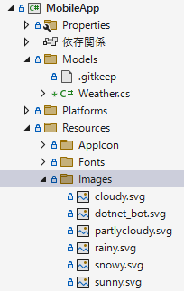画像を選択し、プロパティウィンドウでビルドアクションが「MauiImage」になっていることを確認してください。

Xamarin.Forms プロジェクトに移動し、MainPage.xaml を開きます。
CollectionView の ItemsLayout を VerticalGrid, 2 に書き換え、Grid に置き換えます。全体では次のようになります。
<CollectionView ItemsLayout="VerticalGrid, 2" ItemsSource="{Binding Weathers}">
<CollectionView.ItemTemplate>
<DataTemplate x:DataType="model:Weather">
<Grid Padding="10">
<Grid.RowDefinitions>
<RowDefinition Height="Auto" />
<RowDefinition Height="Auto" />
<RowDefinition Height="Auto" />
</Grid.RowDefinitions>
<Image Grid.Row="0"
Grid.RowSpan="3"
WidthRequest="120"
HeightRequest="120"
Source="{Binding Summary, StringFormat='{0}.svg'}" />
<Label Grid.Row="0"
HorizontalTextAlignment="Center"
Text="{Binding Date, StringFormat='{}{0:yyyy/MM/dd}'}" />
<Label Grid.Row="1"
HorizontalTextAlignment="Center"
Text="{Binding Temperature, StringFormat='{0}℃'}" />
<Label Grid.Row="2"
HorizontalTextAlignment="Center"
Text="{Binding Summary}" />
</Grid>
</DataTemplate>
</CollectionView.ItemTemplate>
</CollectionView>
再度ビルドしてデバッグ実行してみましょう。次のようになれば OK です。

スクロール可能なコントロールを下に引っ張って内容をリロードする Pull-to-Refresh の機能を追加します。Xamarin.Forms では RefreshView が用意されています。RefreshView の詳細は RefreshView | コマンドの開始 | Views | コントロール | ユーザーインターフェイス | .NET MAUI を参照してください。
MainPage.xaml を開き CollectionView の上に RefreshView を追加します。次のようになります。
<RefreshView Command="{Binding GetWeathersCommand}" IsRefreshing="{Binding IsRefreshing}">
<CollectionView ItemsLayout="VerticalGrid, 2" ItemsSource="{Binding Weathers}">
...略...
</CollectionView>
</RefreshView>
リフレッシュする時のコマンドはボタンと同じ GetWeathersCommand を割り当てます。リフレッシュ中にグルグルの表示やリフレッシュ終了を検知するために IsRefreshing プロパティに bool 値を割り当てます。
MainPageViewModel.cs を開き CanClick プロパティの下に IsRefreshing プロパティを追加します。
public bool IsRefreshing => !CanClick;
再度デバッグ実行し、引っ張って更新できれば OK です。
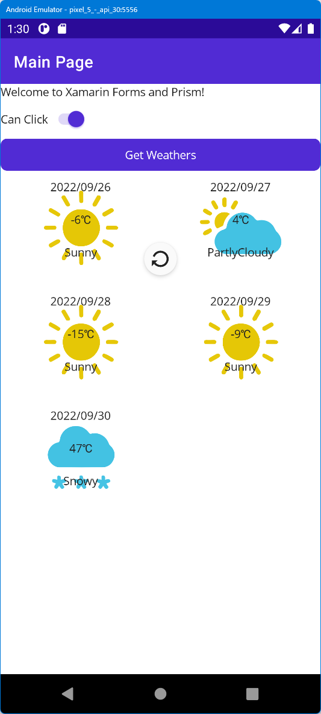.NET MAUI では標準で DisplayAlert、DisplayActionSheet、DisplayPromptAsync の 3つの Page クラスのメソッドが用意されています。
ここでは DisplayAlert を使用して、CollectionView のタップした項目をダイアログに表示してみましょう。
MainPageViewModel.cs を開き、バインド対象のプロパティとコマンドを追加します。
_isRefreshing プロパティの下に次を追加します。
[ObservableProperty]
private Weather _selectedWeather;
SelectWeather メソッドを追加します。
private async void SelectWeather()
{
if (SelectedWeather == null)
return;
// ダイアログを表示するパターン
await Shell.Current.DisplayAlert("Dialog Title", $"{SelectedWeather.Date:yyyy/MM/dd} は {SelectedWeather.Temperature}℃ で {SelectedWeather.Summary} です。", "OK");
}
最後に MainPage.xaml を開き、CollectionView に次の 3つの属性を追加し、1つをタップした際にコマンドを発行し、選択項目をバインドするようにします。
SelectedItem="{Binding SelectedWeather}"
SelectionChangedCommand="{Binding SelectWeatherCommand}"
SelectionMode="Single"
再度ビルドしてデバッグ実行してみましょう。次のようになれば OK です。
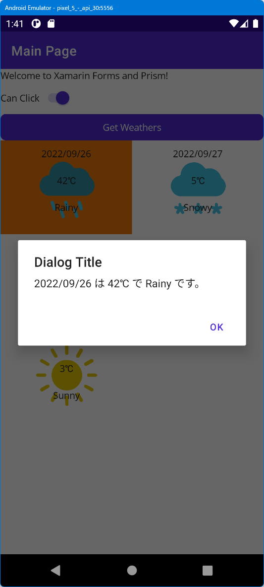次はタップした後に画面遷移をしてみます。別途 XAML でビューを定義します。
<ContentPage xmlns="http://schemas.microsoft.com/dotnet/2021/maui"
xmlns:x="http://schemas.microsoft.com/winfx/2009/xaml"
xmlns:viewModel="clr-namespace:MobileApp.ViewModels"
x:Class="MobileApp.Views.DetailsPage"
x:DataType="viewModel:DetailsViewModel"
Title="{Binding Weather.Date, StringFormat='{}{0:yyyy/MM/dd}'}">
<ScrollView VerticalOptions="Center">
<VerticalStackLayout>
<Image Grid.Row="1"
WidthRequest="120"
HeightRequest="120"
Source="{Binding Weather.Summary, StringFormat='{0}.svg'}" />
<Label Grid.Row="2"
HorizontalTextAlignment="Center"
Text="{Binding Weather.Temperature, StringFormat='{0}℃'}" />
<Label Grid.Row="3"
HorizontalTextAlignment="Center"
Text="{Binding Weather.Summary}" />
</VerticalStackLayout>
</ScrollView>
</ContentPage>
SelectWater メソッドにある DisplayAlert をコメントアウトして下記を追加します。
await Shell.Current.GoToAsync(nameof(DetailsPage), true, new Dictionary<string, object>
{
{"Weather", SelectedWeather}
});
DetailsViewModel クラスを下記のように書き換えます。
[QueryProperty(nameof(Weather), "Weather")]
public partial class DetailsViewModel : ViewModelBase
{
[ObservableProperty]
Weather _weather;
}
次のように表示されます。
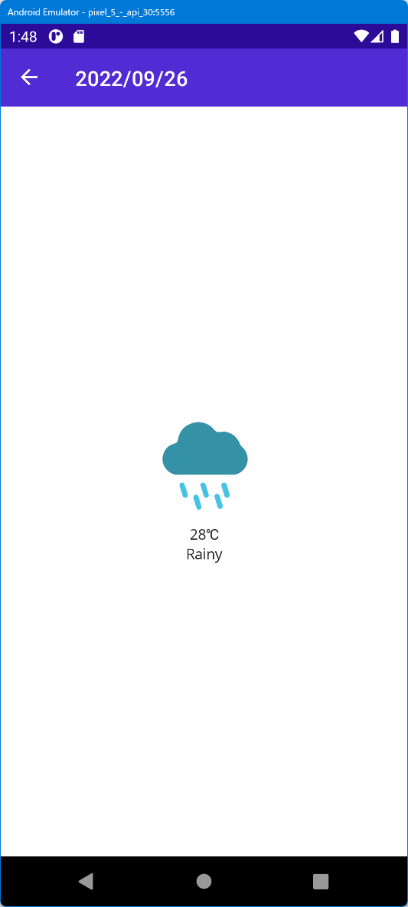まだ Web API が完成していない場合やテストをする場合を考慮して、ダミーデータを利用するようにしてみましょう。
Services フォルダを右クリックして「追加＞クラス」をクリックし、MockWeatherService.cs と名前を付けてクラスを作成します。
IWeatherService の継承を追加し、実装を追加します。次のようになります。
class MockWeatherService : IWeatherService
{
public async Task<ObservableCollection<Weather>> GetWeathersAsync()
{
var weathers = new ObservableCollection<Weather>
{
new Weather
{
Date = new DateTime(2021,11,1),
Summary = "Rainy",
Temperature = 20
},
new Weather
{
Date = new DateTime(2021,11,2),
Summary = "Cloudy",
Temperature = 25
},
new Weather
{
Date = new DateTime(2021,11,3),
Summary = "Sunny",
Temperature = 30
}
};
return weathers;
}
}
次に App.xaml.cs を開き、WeatherService を登録していた部分を次のように修正します。
#if DEBUG
builder.Services.AddSingleton<IWeatherService, MockWeatherService>();
#else
builder.Services.AddSingleton<IWeatherService, WeatherService>();
#endif
これでデバッグ用に MockWeatherService を利用できるようになりました。
デバッグ実行して、次のように 2021/11/1 から 2021/11/3 までのデータが表示されていれば OK です。

これで本日のトレーニングはすべて終了です。.NET MAUI にはもっと色々な機能があります。是非使いこなして皆様のモバイルアプリ開発が楽しくなることを願っています！
ローカルデバッグ用に .NET Core の Web API を作成します。
HTTPS 用の構成 のチェックを外します。通常 Web にデプロイする Web アプリケーションは HTTPS で動作するように設定すべきですが、Android Emulator から localhost の Web サービスにアクセスするには
10.0.2.2を指定する必要があり、かつ、iOS シミュレーターと Android エミュレーターからローカル Web サービスに接続する - Xamarin | Microsoft Docs に記載されているようにいくつかの処理を行う必要があるため、簡素化するために HTTP で通信できるようにしています。接続する Web アプリケーションが HTTPS に対応していない場合は、Android P で targetSdkVersion を 28 に指定した場合に HTTP 通信が失敗する - Xamarin 日本語情報 を参考に
network-security-configを指定するかusesCleartextTrafficを指定してください。
作成後、スタートアッププロジェクトが「WebApi」になっていること、デバッグプロパティが「WebApi」になっていることを確認し、デバッグボタン「▶」をクリックします。
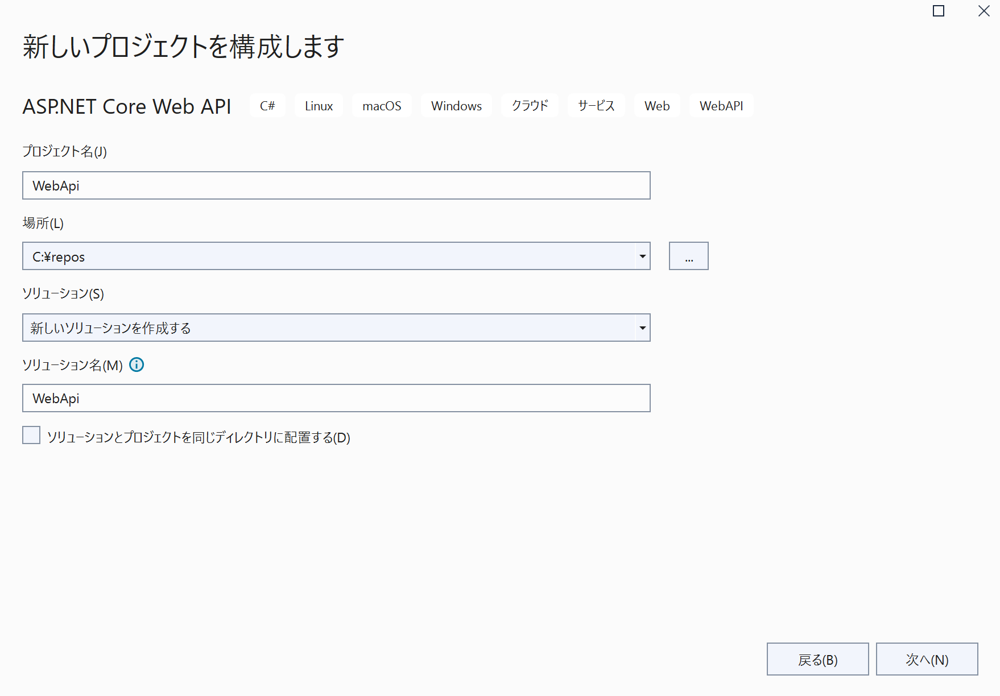指定している Web ブラウザーでデバッグできることを確認してください。

また、WebApi/Controllers/WeatherForecastController.cs の以下のコードでアクセスするたびにランダムに天気の予測を返していることが分かります。
public IEnumerable<WeatherForecast> Get()
{
var rng = new Random();
return Enumerable.Range(1, 5).Select(index => new WeatherForecast
{
Date = DateTime.Now.AddDays(index),
TemperatureC = rng.Next(-20, 55),
Summary = Summaries[rng.Next(Summaries.Length)]
})
.ToArray();
}
デバッグ実行中のブラウザをリロードすると毎回気温の値が変化するのが分かります。
1つのプロジェクトからマルチプラットフォームにビルドできます。
MVVM だけでなく、Swift UI や Flutter のような Model-View-Update (MVU) パターンをサポートします。
readonly State<int> count = 0;
[Body]
View body() => new StackLayout
{
new Label("Welcome to .NET MAUI!"),
new Button(
() => $"You clicked {count} times.",
() => count.Value ++)
)
};
同じ内容を MVVM の XAML とコードで記述する場合は以下のようになります。
<StackLayout>
<Label Text="Welcome to .NET MAUI!" />
<Button Text="{Binding Text}"
Command="{Binding ClickCommand}" />
</StackLayout>
public Command ClickCommand { get; }
public string Text { get; set; } = "Click me";
int count = 0;
void ExecuteClickCommand ()
{
count++;
Text = $"You clicked {count} times.";
}
詳細は以下を参照してください。